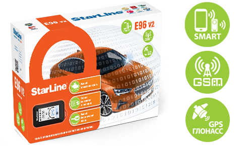

Комплексы без автозапуска
-
Старлайн A67 
Умный охранно-телематический комплекс StarLine А67 включает лучшие решения в области автобезопасности и гарантирует надежную защиту от угона благодаря устойчивому к электронному взлому диалоговому коду управления, широким возможностям для авторских блокировок двигателя, обеспечивающим защиту от ретрансляции, уникальному трансиверу для работы в условиях экстремальных городских радиопомех. А гибкие настройки сервисных функций подарят вашему автомобилю уровень комфорта премиум-класса  Старлайн А67 установить купить в Дзержинске
Старлайн А67 установить купить в ДзержинскеСтоимость 17 350 Стоимость установки 4 500 Стоимость c установкой
21 350 (при условии покупки комплекса у нас, скидка 500 рублей на установку) -
Старлайн А63 v2 
Надежный автомобильный охранно-телематический комплекс с несканируемым диалоговым кодом управления, опциональными 2CAN+2LIN и GSM интерфейсами, опциональным GPS-ГЛОНАСС мониторингом, ударопрочным брелком управления, 128-канальным помехозащищенным трансивером с дальностью оповещения до 2000 м Starline А63 v2 GSM ECO установить купить в Дзержинске Стоимость 8 900 Стоимость установки 4 500 Стоимость c установкой
12 900 (при условии покупки комплекса у нас, скидка 500 рублей на установку) -
Старлайн A63 v2 ECO Надежный автомобильный охранно-телематический комплекс с несканируемым диалоговым кодом управления, опциональными 2CAN+2LIN и GSM интерфейсами, опциональным GPS-ГЛОНАСС мониторингом, ударопрочным брелком управления, 128-канальным помехозащищенным трансивером с дальностью оповещения до 2000 м  Starline А63 v2 GSM ECO установить купить в Дзержинске
Starline А63 v2 GSM ECO установить купить в ДзержинскеСтоимость 7 450 Стоимость установки 4 500 Стоимость c установкой
11 450 (при условии покупки комплекса у нас, скидка 500 рублей на установку) -
Старлайн А63 v2 GSM ECO Центральный блок с c интегрированным GSM-модулем, брелок с обратной связью с ЖКИ- функция SLAVE, модуль приемопередатчика с интегрированными 3D датчиками удара и наклона, сирена, различные варианты комплектаций SIM-картами, комплекты проводов и печатной продукции),автозапуск StarLine для автомобилей, не требующих силовых цепей Starline А63 v2 GSM ECO установить купить в ДзержинскеСтоимость 12 800 Стоимость установки 4 500 Стоимость c установкой
16 800 (при условии покупки комплекса у нас, скидка 500 рублей на установку) -
Старлайн S66 v2 BT 2CAN+4LIN 2SIM GSM Центральный блок с интегрированным 2CAN+4LIN, Bluetooth Smart - интерфейсом и GSM-модулем, 3D датчиком удара, наклона и движения, дополнительный брелок-метка BLE (2 шт.), сирена, интегрированный SIM-чип МТС+ SIM-холдер, различные варианты комплектаций SIM-картами, комплекты проводов и печатной продукции, автозапуск StarLine для автомобилей, не требующих силовых цепей; бесключевая технология обхода iKey  Starline А63 v2 GSM ECO установить купить в Дзержинске
Starline А63 v2 GSM ECO установить купить в ДзержинскеСтоимость 10 750 Стоимость установки 4 500 Стоимость c установкой
14 750 (при условии покупки комплекса у нас, скидка 500 рублей на установку) -
Старлайн Е66 V2 BT ECO 2CAN+4LIN 
Надежный автомобильный охранно-телематический комплекс с несканируемым диалоговым кодом управления, возможностью авторизации по защищенному протоколу через персональную метку или смартфон на iOS и Android с мобильным приложением StarLine, интегрированным 2CAN+4LIN интерфейсом, ударопрочным брелком управления, помехозащищенным трансивером с малошумящим усилителем  Starline А63 v2 GSM ECO установить купить в Дзержинске
Starline А63 v2 GSM ECO установить купить в ДзержинскеСтоимость 9 750 Стоимость установки 4 500 Стоимость c установкой
13 750 (при условии покупки комплекса у нас, скидка 500 рублей на установку)
Комплексы с автозапуском
-
Победит B97 LTE  Старлайн В97 Победит установить купить в Дзержинске
Старлайн В97 Победит установить купить в ДзержинскеВключает в себя 7 рубежей защиты: надежная охрана периметра с информированием на брелок и смартфон, умная авторизация владельца по смартфону и персональной метке на основе технологии Bluetooth Smart и брелку, электромеханическая защита капота,умная беспроводная блокировка двигателя, бесплатный online мониторинг, автономный поисковый маяк, гарантия финансовой безопасности - дополнительная выплата по КАСКО, в случае угона авто с установленным данным комплексом, 75 000 рублей 
Стоимость 46 250 Стоимость установки 16 500 Стоимость c установкой 61 750 (при условии покупки комплекса у нас, скидка 1000 рублей на установку) -
Победит S96 v2  Старлайн S97 Победит установить купить в Дзержинске
Старлайн S97 Победит установить купить в ДзержинскеНадежная охрана периметра с информированием на смартфон, умная авторизация владельца по смартфону и персональной метке на основе технологии, Bluetooth Smart, электромеханическая защита капота, умная беспроводная блокировка двигателя, бесплатный online мониторинг, автономный поисковый маяк. Гарантия финансовой безопасности - дополнительная выплата по КАСКО, в случае угона авто с установленным данным комплексом, 75 000 рублей 
Стоимость 38 300 Стоимость установки 6 500 Стоимость c установкой 43 800 (при условии покупки комплекса у нас, скидка 1000 рублей на установку) -
Победит AS97 LTE  Старлайн AS97 Победит установить купить в Дзержинске
Старлайн AS97 Победит установить купить в ДзержинскеНадежная охрана периметра с информированием на смартфон, умная авторизация владельца по смартфону и персональной метке на основе технологии, Bluetooth Smart, электромеханическая защита капота, умная беспроводная блокировка двигателя, бесплатный online мониторинг, автономный поисковый маяк. Гарантия финансовой безопасности - дополнительная выплата по КАСКО, в случае угона авто с установленным данным комплексом, 75 000 рублей 
Стоимость 34 650 Стоимость установки 6 500 Стоимость c установкой 41 150 (при условии покупки комплекса у нас, скидка 1000 рублей на установку) -
Starline D97 LTE-GPS  Старлайн D97 установить купить в Дзержинске
Старлайн D97 установить купить в ДзержинскеНадежный автомобильный охранно-телематический комплекс с интеллектуальным автозапуском, несканируемым диалоговым кодом управления, интегрированными 2CAN+2LIN, GSM+BT и GPS+ГЛОНАСС интерфейсами, ударопрочным брелком управления, помехозащищенным трансивером с малошумящим усилителем Стоимость 34 200 Стоимость установки 6 500 Стоимость c установкой 39 700 (при условии покупки комплекса у нас, скидка 1000 рублей на установку) -
Starline B97 LTE-GPS Старлайн D97 установить купить в ДзержинскеНадежный автомобильный охранно-телематический комплекс с интеллектуальным автозапуском, несканируемым диалоговым кодом управления, интегрированными 2CAN+2LIN, GSM+BT и GPS+ГЛОНАСС интерфейсами, ударопрочным брелком управления, помехозащищенным трансивером с малошумящим усилителем Стоимость 34 200 Стоимость установки 6 500 Стоимость c установкой 39 700 (при условии покупки комплекса у нас, скидка 1000 рублей на установку) -
Starline A97 BT GSM-GPS Старлайн D97 установить купить в Дзержинске Центральный блок с интегрированным 3CAN+4LIN и Bluetooth Smart-интерфейсом, LTE-модулем, приемопередатчиком, брелок с обратной связью с ЖКИ - функция SLAVE,дополнительный брелок-метка BLE, силовой модуль запуска, навигационный модуль c ГЛОНАСС+GPS-антенной, реле блокировки двигателя R6, сирена, 2SIM: интегрированный SIM-чип МТС+ SIM-холдер, различные варианты комплектаций SIM-картами, комплекты проводов и печатной продукции 
Стоимость 30 950 Стоимость установки 6 500 Стоимость c установкой 39 450 (при условии покупки комплекса у нас, скидка 1000 рублей на установку) -
Starline AS97 LTE-GPS Старлайн D97 установить купить в Дзержинске Центральный блок с интегрированным 3CAN+4LIN и Bluetooth Smart-интерфейсом, LTE-модулем, приемопередатчиком, брелок с обратной связью с ЖКИ - функция SLAVE,дополнительный брелок-метка BLE, силовой модуль запуска, навигационный модуль c ГЛОНАСС+GPS-антенной, реле блокировки двигателя R6, сирена, 2SIM: интегрированный SIM-чип МТС+ SIM-холдер, различные варианты комплектаций SIM-картами, комплекты проводов и печатной продукции Стоимость 23 450 Стоимость установки 6 500 Стоимость c установкой 28 950 (при условии покупки комплекса у нас, скидка 1000 рублей на установку) -
Starline A97 BT GSM Старлайн D97 установить купить в Дзержинске Центральный блок с интегрированным 3CAN+4LIN и Bluetooth Smart-интерфейсом, GSM и приемопередатчиком, брелок с обратной связью с ЖКИ - функция SLAVE, дополнительный брелок-метка BLE, силовой модуль запуска , сирена, 2SIM: интегрированный SIM-чип МТС+ SIM-холдер, различные варианты комплектаций SIM-картами, комплекты проводов и печатной продукции Стоимость 25 300 Стоимость установки 6 500 Стоимость c установкой 30 800 (при условии покупки комплекса у нас, скидка 1000 рублей на установку) -
Starline B97 Старлайн B97 установить купить в Дзержинске Центральный блок с интегрированными 3CAN+4LIN и Bluetooth Smart-интерфейсом и приемопередатчиком, брелок с обратной связью с ЖКИ - функция SLAVE, дополнительный брелок-метка BLE, силовой модуль запуска, сирена, комплекты проводов и печатной продукции 
Стоимость 22 900 Стоимость установки 6 500 Стоимость c установкой 28 400 (при условии покупки комплекса у нас, скидка 1000 рублей на установку) -
Starline A97 BT Старлайн A97 BT установить купить в Дзержинске Центральный блок с интегрированным 3CAN+4LIN и Bluetooth Smart-интерфейсом и приемопередатчиком, брелок с обратной связью с ЖКИ - функция SLAVE, доп. брелок , силовой модуль запуска, сирена, комплекты проводов и печатной продукции 
Стоимость 19 750 Стоимость установки 6 500 Стоимость c установкой 25 250 (при условии покупки комплекса у нас, скидка 1000 рублей на установку) -
Starline E96 v2 BT 2CAN+4LIN 2SIM GSM-GPS Старлайн A97 BT установить купить в Дзержинске Центральный блок с интегрированным 2CAN+4LIN и GSM, и Bluetooth Smart - интерфейсами и приемопередатчиком, навигационный модуль c ГЛОНАСС+GPS-антенной, 3D датчиком удара, наклона и движения, брелок с обратной связью с ЖКИ- функция SLAVE, дополнительный брелок-метка BLE, интегрированный SIM-чип МТС+ SIM-холдер, различные варианты комплектаций SIM-картами, силовой модуль запуска, сирена, чехол кожаный, комплекты проводов и печатной продукции 
Стоимость 19 750 Стоимость установки 6 500 Стоимость c установкой 25 250 (при условии покупки комплекса у нас, скидка 1000 рублей на установку) -
Starline А93 v2 GSM  Старлайн A97 BT установить купить в Дзержинске
Старлайн A97 BT установить купить в ДзержинскеЦентральный блок c интегрированным GSM-модулем, брелок с обратной связью с ЖКИ- функция SLAVE, доп.брелок- функция SLAVE, силовой модуль запуска, модуль приемопередатчика с интегрированными 3D датчиками удара и наклона, сирена,различные варианты комплектаций SIM-картами, комплекты проводов и печатной продукции 
Стоимость 16 900 Стоимость установки 6 500 Стоимость c установкой 22 400 (при условии покупки комплекса у нас, скидка 1000 рублей на установку) -
Starline S96 v2 BT 2CAN+4LIN 2SIM GSM-GPS  Старлайн A97 BT установить купить в Дзержинске
Старлайн A97 BT установить купить в ДзержинскеЦентральный блок с интегрированным 2CAN+4LIN, Bluetooth Smart - интерфейсом и GSM-модулем, навигационный модуль c ГЛОНАСС+GPS-антенной, 3D датчиком удара, наклона и движения, дополнительный брелок-метка BLE (2 шт.), силовой модуль запуска, сирена, интегрированный SIM-чип МТС+ SIM-холдер, различные варианты комплектаций SIM-картами, комплекты проводов и печатной продукции 
Стоимость 16 050 Стоимость установки 6 500 Стоимость c установкой 21 550 (при условии покупки комплекса у нас, скидка 1000 рублей на установку) -
Starline S96 v2 BT 2CAN+4LIN 2SIM GSM Старлайн A97 BT установить купить в ДзержинскеЦентральный блок с интегрированным 2CAN+4LIN, Bluetooth Smart - интерфейсом и GSM-модулем, 3D датчиком удара, наклона и движения, дополнительный брелок-метка BLE (2 шт.), силовой модуль запуска, сирена,интегрированный SIM-чип МТС+ SIM-холдер, различные варианты комплектаций SIM-картами, комплекты проводов и печатной продукции Стоимость 12 800 Стоимость установки 6 500 Стоимость c установкой 18 300 (при условии покупки комплекса у нас, скидка 1000 рублей на установку) -
Starline E96 V2 BT 2CAN+4LIN  Старлайн A97 BT установить купить в Дзержинске
Старлайн A97 BT установить купить в ДзержинскеЦентральный блок с интегрированным 2CAN+4LIN и Bluetooth Smart - интерфейсами и приемопередатчиком, 3D датчиком удара, наклона и движения, брелок с обратной связью с ЖКИ - функция SLAVE, дополнительный брелок-метка BLE, силовой модуль запуска, сирена, чехол кожаный, комплекты проводов и печатной продукции 
Стоимость 12 800 Стоимость установки 6 500 Стоимость c установкой 18 300 (при условии покупки комплекса у нас, скидка 1000 рублей на установку) -
Starline А93 v2 Старлайн A97 BT установить купить в ДзержинскеЦентральный блок, брелок с обратной связью с ЖКИ- функция SLAVE, доп.брелок- функция SLAVE, силовой модуль запуска, модуль приемопередатчика с интегрированными 3D датчиками удара и наклона, сирена, комплекты проводов и печатной продукции Стоимость 11 350 Стоимость установки 6 500 Стоимость c установкой 16 850 (при условии покупки комплекса у нас, скидка 1000 рублей на установку) -
Starline E96 V2 BT ECO 2CAN+4LIN  Starline E96 V2 BT ECO 2CAN+4LIN установить купить в Дзержинске
Starline E96 V2 BT ECO 2CAN+4LIN установить купить в ДзержинскеЦентральный блок с интегрированным 2CAN+4LIN и Bluetooth Smart - интерфейсами и приемопередатчиком, 3D датчиком удара, наклона и движения, брелок с обратной связью с ЖКИ - функция SLAVE, силовой модуль запуска, сирена, комплекты проводов и печатной продукции Стоимость 11 250 Стоимость установки 6 500 Стоимость c установкой 16 750 (при условии покупки комплекса у нас, скидка 1000 рублей на установку) -
Starline А93 v2 2CAN+2LIN ECO Starline E96 V2 BT ECO 2CAN+4LIN установить купить в ДзержинскеЦентральный блок с интегрированным 2CAN+2LIN-интерфейсом, брелок с обратной связью с ЖКИ - функция SLAVE, силовой модуль запуска, модуль приемопередатчика с интегрированными 3D датчиками удара и наклона, сирена, комплекты проводов и печатной продукции Стоимость 11 250 Стоимость установки 6 500 Стоимость c установкой 16 750 (при условии покупки комплекса у нас, скидка 1000 рублей на установку) -
Starline А93 v2 ECO Starline E96 V2 BT ECO 2CAN+4LIN установить купить в Дзержинске Центральный блок с интегрированным 2CAN+2LIN-интерфейсом, брелок с обратной связью с ЖКИ - функция SLAVE, силовой модуль запуска, модуль приемопередатчика с интегрированными 3D датчиками удара и наклона, сирена, комплекты проводов и печатной продукции 
Стоимость 9 900 Стоимость установки 6 500 Стоимость c установкой 15 400 (при условии покупки комплекса у нас, скидка 1000 рублей на установку)
Комплексы для мотоциклов
-
moto v67  Старлайн moto v67 установить купить в Дзержинске
Старлайн moto v67 установить купить в ДзержинскеИнновационный охранно-телематический комплекс StarLine V67 со встроенным реле блокировки двигателя, мониторинговым маяком и авторизацией владельца по смартфону или миниатюрной метке защитит ваш мотоцикл с умом. StarLine V67 защищает мотоцикл от угона и следит за его перемещением. Он распознаёт владельца по смартфону с технологией Bluetooth Smart и охраняет мотоцикл непрерывно до 80 дней без подзарядки. Стоимость 10 800 Стоимость установки
4 000Стоимость c установкой 12 900 (при условии покупки комплекса у нас) -
moto v66 Старлайн moto v66 установить купить в Дзержинске Умный мотоиммобилайзер со встроенным реле блокировки двигателя и авторизацией владельца по технологии Bluetooth Smart с помощью миниатюрной влагозащищеннной радиометки или смартфона Стоимость 6 500 Стоимость установки
3 500Стоимость c установкой 8 600 (при условии покупки комплекса у нас) -
moto v66 ECO  Старлайн moto v66 ECO установить купить в Дзержинске
Старлайн moto v66 ECO установить купить в ДзержинскеУмный мотоиммобилайзер со встроенным реле блокировки двигателя и авторизацией владельца по технологии Bluetooth Smart с помощью смартфона Корпус со степенью защиты IP67 предотвращает попадание пыли и влаги в устройство и позволяет установить его в самом труднодоступном месте. Стоимость 4 400 Стоимость установки
3 500Стоимость c установкой 6 500 (при условии покупки комплекса у нас) -
moto v63  Старлайн moto v63 установить купить в Дзержинске
Старлайн moto v63 установить купить в ДзержинскеНадежный охранный комплекс для защиты мототранспорта с несканируемым диалоговым кодом управления, SUPER SLAVE авторизацией, защитой багажа, ударопрочным брелком, 128-канальным помехозащищенным трансивером с дальностью оповещения до 1200 м. Рассчитан на работу в условиях экстремальных городских помех. Стоимость 12 000 Стоимость установки
4 000Стоимость c установкой 14 100 (при условии покупки комплекса у нас)
Маяки (трекеры)
-
M66 M ECO  Старлайн M66 M ECO установить купить в Дзержинске
Старлайн M66 M ECO установить купить в ДзержинскеКомпактный умный трекер StarLine M66 предназначен для умного мониторинга и надежной защиты легкового и грузового транспорта. Защищает. Сообщает. Показывает Стоимость 5 900 Стоимость установки 2 500 Стоимость c установкой 8 400 -
M66 S  Старлайн M66 S установить купить в Дзержинске
Старлайн M66 S установить купить в ДзержинскеКомпактный умный трекер StarLine M66 предназначен для умного мониторинга и надежной защиты легкового и грузового транспорта. Защищает. Сообщает. Показывает Стоимость 4 600 Стоимость установки 2 500 Стоимость c установкой 7 100 -
M18 Pro ГЛОНАСС + GPS Старлайн M18 Pro ГЛОНАСС+GPS установить купить в Дзержинске Универсальный мониторинговый трекер вобрал в себя наилучшие свойства и характеристики мировых аналогов в качестве стандарта Стоимость 4 000 Стоимость установки 2 500 Стоимость c установкой 6 500 -
M18  Старлайн M18 установить купить в Дзержинске
Старлайн M18 установить купить в ДзержинскеУниверсальный мониторинговый трекер вобрал в себя наилучшие свойства и характеристики мировых аналогов в качестве стандарта. Стоимость 3 800 Стоимость установки 2 500 Стоимость c установкой 6 300 -
M17 ГЛОНАСС+GPS Старлайн M17 ГЛОНАСС+GPS установить купить в Дзержинске Маяк M17 GPS+ГЛОНАСС знает, где ваш автомобиль. Инновационный автономный охранно-мониторинговый Маяк M17 GPS-ГЛОНАСС вобрал в себя наилучшие свойства и характеристики мировых аналогов в качестве стандарта. Стоимость 4 600 Стоимость установки 2 500 Стоимость c установкой 7 100 -
M15 ГЛОНАСС+GPS  Старлайн M15 ГЛОНАСС+GPS установить купить в Дзержинске
Старлайн M15 ГЛОНАСС+GPS установить купить в ДзержинскеМаяк M15 GPS+ГЛОНАСС знает, где ваш автомобиль. Инновационный автономный поисковый Маяк M15 GPS+ГЛОНАСС с рекордной энергоэкономичностью помогает найти ваш автомобиль, где бы он ни оказался. Маяк M15 GPS+ГЛОНАСС вобрал в себя наилучшие свойства и характеристики мировых аналогов в качестве стандарта. Стоимость 4 100 Стоимость установки 2 500 Стоимость c установкой 6 600